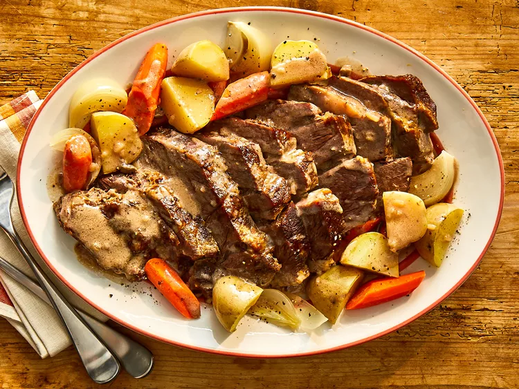

Slow Cooker Pot Roast Recipe

Description
This Lipton onion soup pot roast recipe is very easy to prepare and makes a delicious pot roast in its own gravy.
The recipe is perfect for those who don't have time to cook all day but want to make something that tastes like
they did. You'll want to use a cut of meat between 5 to 6 pounds.
Ingredients
- 2 (10.5 ounce) cans condensed cream of mushroom soup
- 1 ¼ cups water
- 1 (1 ounce) package dry onion soup mix
- 5 ½ pounds pot roast
Steps
- Mix condensed soup, water, and dry onion soup mix in a slow cooker. Place pot roast in the slow cooker and
coat with soup mixture.
- Cook on Low for 8 to 9 hours or High for 3 to 4 hours.